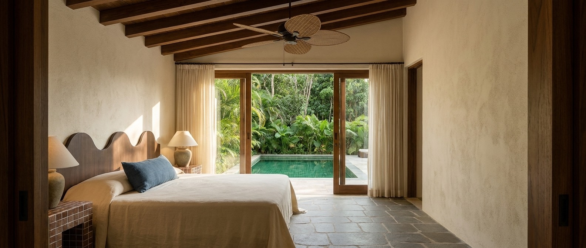
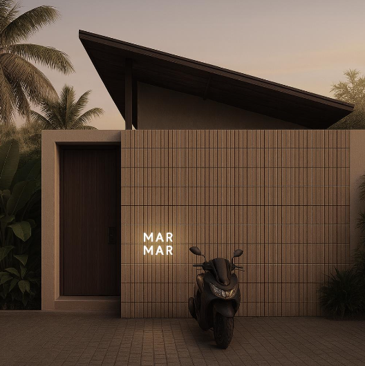
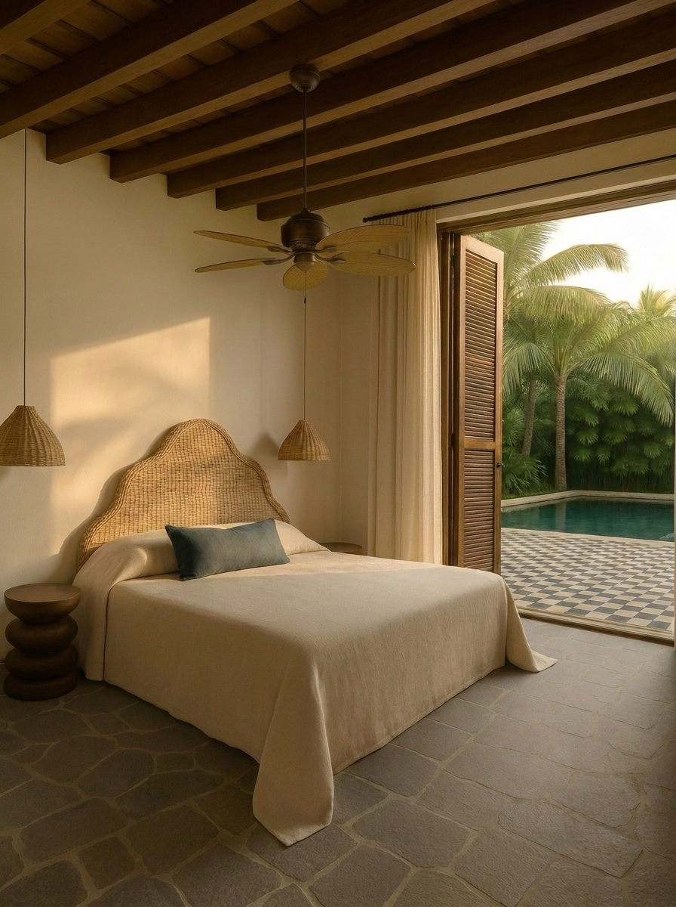
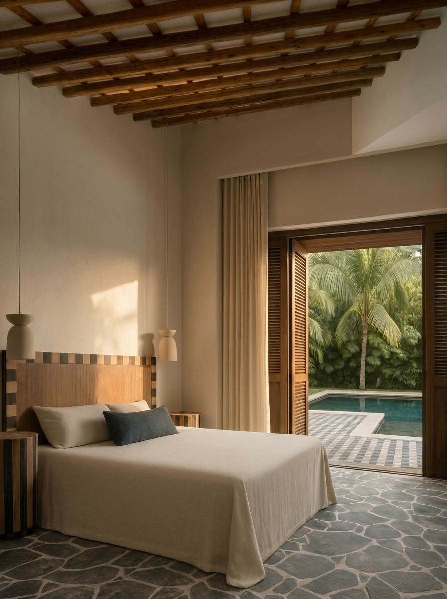

Villa Satu · One
Satu
50 m² · one bedroom


A boutique hotel of four villas at Nyang Nyang, Bali. You arrive at a slatted timber wall under a broad single-slope roof — a teak door, the name in lit signage, a scooter at the gate. Beyond it, four villas in terracotta brick and eggshell-cream stucco, each opening to a private terrace and pool.

A teak-lattice corridor links the four. Each villa holds a single bedroom that opens through glass to its own terrace and pool — and each carries its own custom headboard, designed by MarMar Studio.




A teak-lattice ceiling filters the light into a shifting grid across the honed andesite crazy-paving. Ceramic shell sconces wash the eggshell-stucco walls, and terracotta-potted palms line the way. Within the rooms: single-slope ceilings of exposed beams, wicker-bladed fans and linen curtains, with bathrooms in green glass mosaic and matte-black fittings, doors in teak and ulin.
Arrival is through a teak door in a slatted timber wall, the name in lit signage. Inside, each villa keeps a built-in oak coffee & mini-bar nook — espresso machine, cups hung on a brass rail, glassware and a stone counter. The villas stand among the trees, under broad single-slope roofs.
Four villas at Nyang Nyang, Bali — Satu, Dua, Tiga and Enam. Leave your details and we'll be in touch about a stay.